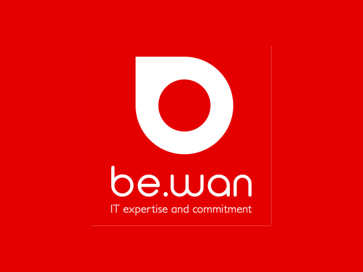
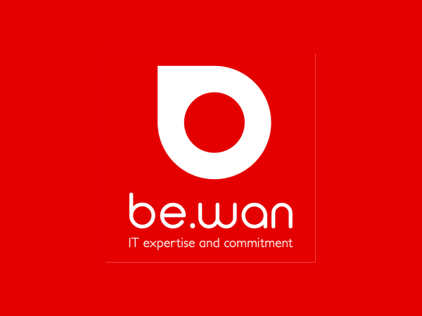

3h | AGORIA TOUR

3h | AGORIA TOUR

26 mars 2019, visite de 10h à 12h30 (réellement jusque 13h).
Justifié : 3h
Agoria est une association regroupant + de 1.800 entreprises qui sont dans les secteurs touchant la technologie.
Fondé en 1999, 2 sites (Waterloo et Wevelgem (développeurs, situé à Courtrai), 50 FTE (temps plein).
La digitalisation est un « raz-de-marée », si une entreprise ne suit pas le mouvement, elles disparaissent.
Un peu comme un ERP.
Une application permettant d’aider dans la gestion de certains points de l’entreprise.
→ CRM, Alpha management (logiciel comptable), synchro financials, global ERP, property management.
Différents modules :
Big Data : sur lequel les prédictions se basent.
IoT : LoRa (permet de relever différentes informations) avec réseau LoRa One (tout le réseau mobile Proximus en sont pourvu) ou The Thinks (Open Source).
Présentation de la plateforme en v1 :
Architecture en multi-tenant : chaque client à son compte et ses propres données.
Il y a une base de données « master » avec celle de chaque entreprise à l’intérieur.
Chaque employé à son propre compte.
Présentation de la plateforme en v2 :
La différence avec la v1 est qu’elle est feature proof et que l’accès direct de l’employé sur la plateforme en ligne soit possible, contrairement à la v1.
IRIS Rail gère le processus d’audits de qualité dans le domaine ferroviaire.
Logiciel sur mesure pour l’UNIFE (Union des Industries Ferroviaires Européennes).
Processus de base :
Une application qui a déjà un certain âge (15 ans).
→ Règles OASP : règles de sécurité informatique les plus tendances.
Boite à outils du développeur :
Time and means : temps en régie, le client paye ce qui à été réellement consommé.
Technical: development, infrastructure, architect, team leader, evangelist, ...
Governance: project manager, team manager, enterprise architect, CIO/CTO/CISO/...
CIO : + business
CTO : + technologique
CISO : sécurité.
Créer un projet :
Si on veut innover : on connait un point de friction quelque part ? Développez le software pour.